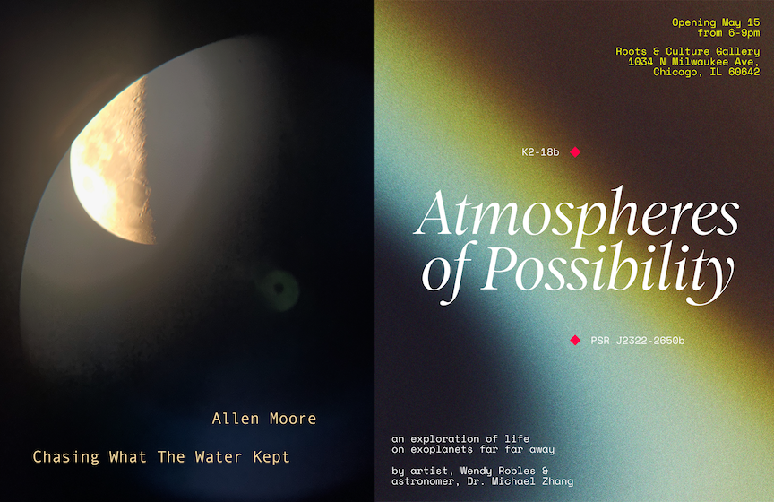

Allen Moore: Chasing what the Water Kept and Wendy Robles & Michael Zhang: Atmospheres of Possibility
Chasing What the Water Kept explores the sonic and visual dimensions of Black death and grief through improvisation and experimentation. The work examines the signifiers of Blackness as shifting cultural and emotional conditions, using sound and image to investigate memory, loss, and presence.
Allen Moore is a Black Interdisciplinary Artist, Experimental Turntableist, Educator and Youth Mentor born and raised in the Historic Village of Robbins IL. Moore holds a Bachelors of Arts from Chicago State University, a Masters in Arts from Governors State University and a Masters of Fine Arts from Northern Illinois University in 2016. His recent body work investigates both the audio and visual element of black death and grief. His conceptual premise is to analyze the signifiers of Blackness through performative Improvisation and experimentation. Moore is driven to nurture and expand the agency of the Black Imagination.
Atmospheres of Possibility is an exhibition that is half fact, half fiction, exploring active astronomical discoveries happening in Chicago and the mysterious nature of two distant exoplanets that exist in a space far away, K2-18B and PSR J2322-2650b.
Wendy Robles is an artist and designer who has built a career in advertising over the past decade and has likely created something you’ve encountered: a television ad, a campaign for a brand you use, or, if you live in Chicago, something you’ve passed by in daily life. But you won’t find that work in this show. Instead, you are invited to step into her after-hours curiosities—an exploration of the invisible and the unknown.
Dr. Michael Zhang obtained a B.S. in Astrophysics from Princeton University in 2014 and an M.S. in Astronomy at the California Institute of Technology in 2018. After a two-year stint as a software engineer at Microsoft, he enrolled in the Caltech PhD program, obtaining his doctorate in 2022. Michael’s background in computer science remains integral to his work as an astronomer. He is currently conducting research at the University of Chicago where he is a 51 Pegasi b / Burbidge postdoctoral fellow, studying the atmospheres of planets outside our solar system.